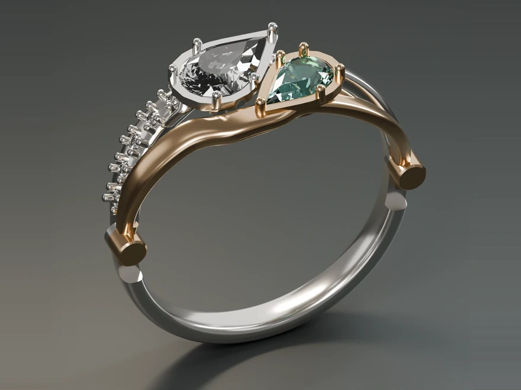
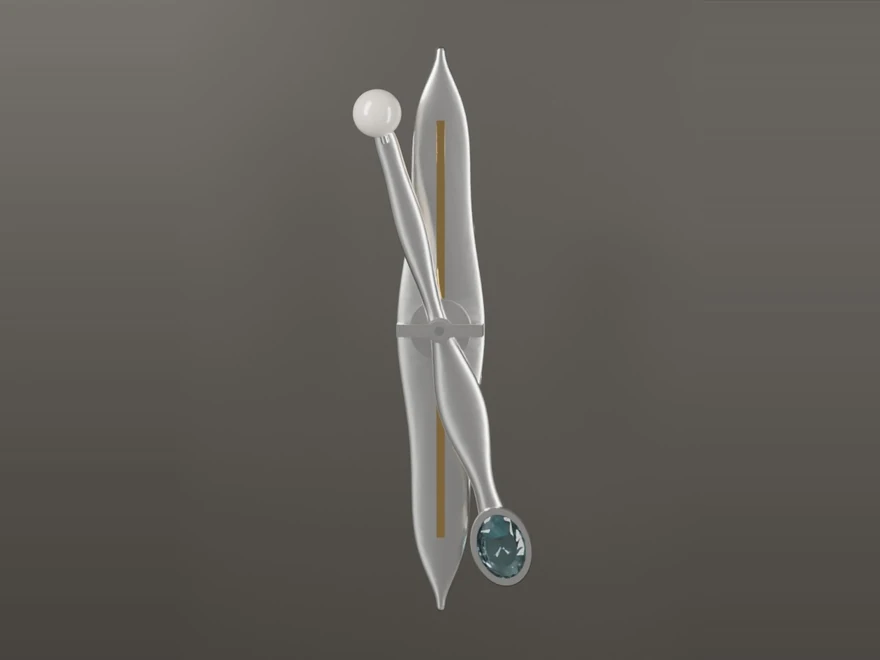
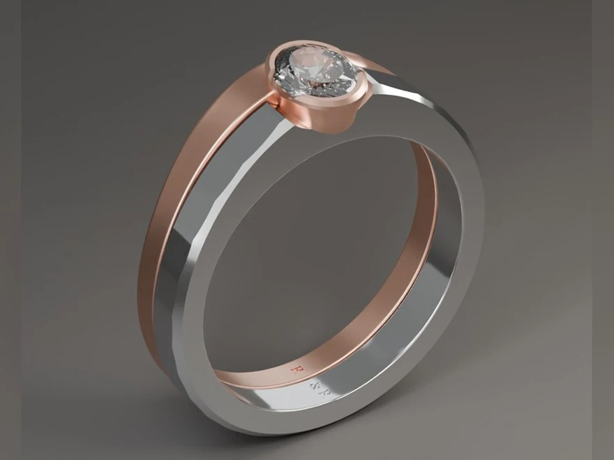
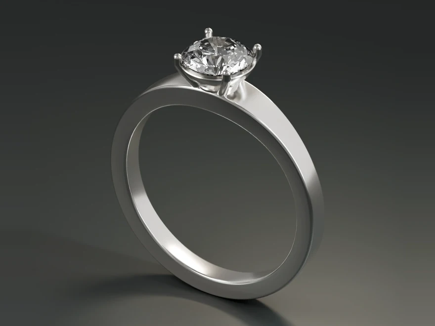

Дуэт R3
Две отливки сходятся на штифтах. В разборке видны стык сплавов и путь каждой из семи вставок до посадки.
Размер 17 · Две груши и пять камней паве · Расчётная масса металла: 3,03 г (585) / 3,48 г (750)
3D-моделлер ювелирных изделий · Rhino / Blender
Работаю по эскизам, фотографиям и размерам вставок. В этих проектах можно проверить посадку камня, рассмотреть стык двух сплавов и увидеть механизм в движении.

Две отливки сходятся на штифтах. В разборке видны стык сплавов и путь каждой из семи вставок до посадки.
Размер 17 · Две груши и пять камней паве · Расчётная масса металла: 3,03 г (585) / 3,48 г (750)

Жемчужина и аквамарин уравновешивают стрелку. Отведите её до упора и отпустите, чтобы увидеть, как открывается золотая вставка.
Корпус 42 мм · Ход ±16° · Около 3,9 г с застёжкой на одну серьгу

Розовое кольцо несёт овал, белое принимает оправу в седло. Раздвиньте пару или рассмотрите выемку на отдельной шинке.
Размер 17 · Овал 4,5 × 6,0 мм · Расчётная масса пары без камня: 7,28 г (585) / 8,35 г (750)

Один круглый камень и четыре открытых крапана. В комплекте — цельная металлическая заготовка в STL и сборка Rhino с отдельной вставкой.
Размер 17 · Вставка Ø 6,0 мм · Расчётная масса металла: 3,68 г (585) / 4,23 г (750)
Готов выполнить тестовое задание для мастерской.